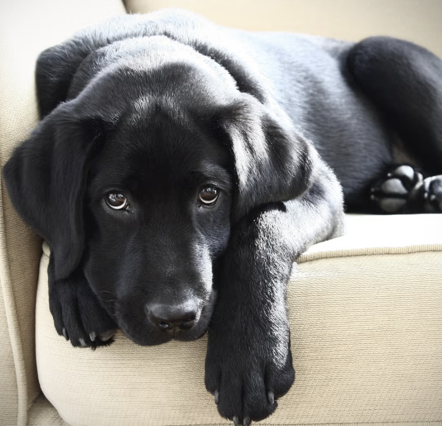
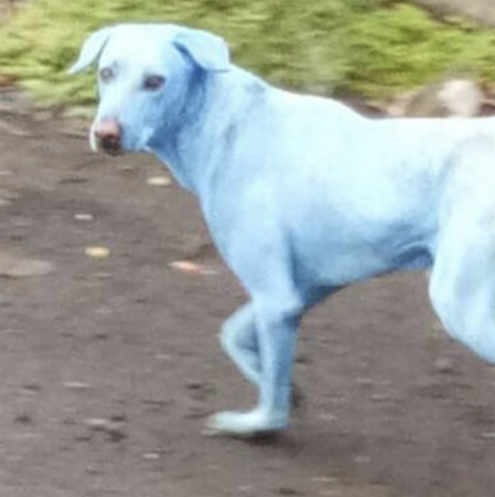

Nickey is a calm and affectionate black Labrador mix who loves relaxing beside his favorite humans.
He enjoys gentle walks, belly rubs, and quiet afternoons.
Nickey is very loyal and would make a wonderful companion for a family looking for a sweet and dependable dog.

Minnie is a playful and energetic fluffy pup with a bright personality.
She loves running around in open spaces and meeting new people.
Her cheerful attitude and adorable look make her the center of attention wherever she goes.

Donald is a curious and adventurous dog who enjoys exploring and staying active.
He loves outdoor activities like jogging and hiking.
Donald is intelligent and quick to learn, making him a great companion for someone who enjoys an active lifestyle.

Goofy ahh lives up to his name — he is funny, playful, and always ready to make people laugh.
With his silly expressions and energetic personality, he brings joy wherever he goes.
He loves attention, treats, and playing with toys.